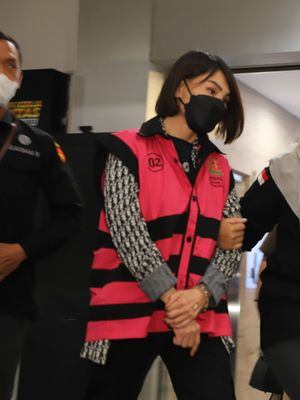

sumber kompas.com pada 17 april 2024
Belum lama ini, Indonesia digemparkan kasus mega korupsi yang diperkirakan berakibat pada kerugian keuangan negara sebesar Rp 271 triliun. Kasus mega korupsi tersebut bertajuk dugaan korupsi dalam tata niaga komoditas timah wilayah Izin Usaha Pertambangan (IUP) PT Timah Tbk untuk tahun 2015-2022. Sederhananya, kasus tersebut mengenai kerja sama pengelolaan lahan PT Timah Tbk dengan pihak swasta yang dilakukan secara ilegal atau melawan hukum. Hasil pengelolaan tersebut pun dijual kembali kepada PT Timah Tbk sehingga berpotensi menimbulkan kerugian negara. Kejaksaan RI menjadi aktor penegak hukum di balik pengungkapan kasus tersebut dan setidaknya sudah 16 orang ditetapkan sebagai tersangka. Adapun beberapa nama tersangka yang menjadi sorotan ialah Harvey Moeis, suami dari aktris Sandra Dewi. Selain itu, crazy rich Pantai Indah Kapuk (PIK) Helena Lim
Penghitungan kerugian keuangan negara Besaran angka kerugian keuangan negara atas praktik korupsi PT Timah pun menimbulkan pertanyaan mengenai bagaimana penghitungan kerugian keuangan negara sehingga sampai pada nominal tersebut. Berbicara mengenai kerugian keuangan negara perlu untuk mengetahui terlebih dahulu perihal apa saja yang dimaksud dan menjadi bagian keuangan negara. Menurut UU 17/2003 tentang Keuangan Negara, mendefinisikan keuangan negara sebagai semua hak dan kewajiban negara yang dapat dinilai dengan uang, serta segala sesuatu baik berupa uang maupun berupa barang yang dapat dijadikan milik negara. Sedangkan kerugian negara sebagaimana diatur dalam UU 1/2004 tentang Perbendaharan Negara adalah kekurangan uang surat berharga, dan barang, yang nyata dan pasti jumlahnya sebagai akibat perbuatan melawan hukum, baik sengaja maupun lalai. Sehubungan dengan penghitungan kerugian atas korupsi Timah Rp 271 T dilakukan sesuai Peraturan Menteri Lingkungan Hidup dan Kehutanan No. 7 Tahun 2014 tentang Kerugian Lingkungan Hidup akibat Pencemaran dan/atau Kerusakan Lingkungan Hidup. Biaya kerugian tersebut meliputi dana untuk menghidupkan fungsi tata air, pengaturan tata air, pengendalian erosi dan limpasan, pembentukan tanah, pendaur ulang unsur hara, fungsi pengurai limbah, biodiversitas (keanekaragaman hayati), sumber daya genetik, dan pelepasan karbon. Penghitungan nominal kerugian keuangan negara tersebut telah dilakukan oleh Ahli yang dihadirkan dari Penyidik, yaitu akademisi dari Fakultas Kehutanan dan Lingkungan IPB, Bambang Hero Saharjo. Menurutnya, kasus timah sepanjang 2015-2022 telah menyebabkan kerugian Rp 271 T. Jumlah itu terdiri dari kerugian lingkungan (ekologis) Rp 157 T, kerugian ekonomi lingkungan Rp 60 T, dan biaya pemulihan lingkungan Rp 5 T. Selain itu, ada pula kerugian di luar kawasan hutan sekitar Rp 47 T. Kasus korupsi timah ini ternyata jadi jumlah paling besar kerugian yang ditanggung oleh negara. Sebelumnya sudah terdapat beberapa kasus mega korupsi dengan kerugian keuangan negara fantastis. Misalnya, kasus Bantuan Likuiditas Bank Indonesia (BLBI), kasus penyerobotan lahan negara untuk kelapa sawit, pengelolaan dana pensiun PT Asabri, dan kasus penyimpangan dana investasi PT Asuransi Angkatan Bersenjata Republik Indonesia (Asabri).

Korupsi timah yang terjadi sebagaimana tersebut di atas merupakan bagian dari rezim korupsi Sektor Sumber Daya Alam (SDA). Pada prinsipnya korupsi pada sumber daya alam memiliki modus yang sama dengan korupsi pada umumnya, seperti gratifikasi, penyuapan, kronisme, atau benturan kepentingan. Hal yang membedakan dengan korupsi pada sektor lainnya terletak pada berbagai bentuk korupsi tersebut dilakukan untuk mendapatkan manfaat sebanyak-banyaknya dari alam, dengan mengabaikan kepentingan ekosistem dan pembangunan berkelanjutan. Seperti layaknya fenomena gunung es, korupsi Timah Rp 271 T dapat dikatakan hanya sebagian kecil saja kasus mengenai penyalahgunaan izin usaha pertambangan terungkap ke permukaan. Pada 2019, misalnya, KPK pernah menangani kasus korupsi terkait SDA dengan kerugian Rp 5,8 T dan 711.000 dollar AS yang menyeret Bupati Kotawaringin Timur, Supian Hadi. Kasus lainnya sektor SDA yang pernah diungkap KPK adalah korupsi mantan Gubernur Sulawesi Tenggara Nur Alam yang dalam penghitungan jaksa mengakibatkan kerugian negara sebesar Rp 4,3 T. Besar kemungkinan modus korupsi yang sama terjadi pada berbagai perusahaan lainnya. Sejumlah permasalahan yang menjadi penyebab kerentanan korupsi berkaitan sumber daya alam di antaranya mengenai ketidapastian hukum dan perizinan, kurang memadainya sistem akuntabilitas, lemahnya pengawasan, dan kelemahan sistem pengendalian manajemen (Utari, 2011). Pada 2022, Direktur Gratifikasi dan Pelayanan Publik KPK RI, Herda Helmijaya menjelaskan bahwa akibat pengelolaan yang buruk, sumber daya alam menjadi salah satu sektor yang rawan terjadi korupsi. Alasannya karena hingga saat ini Indonesia belum memiliki satu peta luas dan batas hutan (one map). Akibatnya, hutan yang seharusnya dilindungi dan dijaga kealamiannya beralih fungsi menjadi perkebunan-perkebunan industri di lahan yang tidak seharusnya. Selain itu, dalam riset yang dilakukan KPK memperlihatkan pelaku suap harus merogoh kocek mulai dari Rp 600 juta hingga Rp 22 miliar untuk mendapatkan izin usaha. Kasus korupsi Timah setidaknya mencerminkan adanya titik lemah pengawasan pemerintah maupun aparat penegak hukum. Hal ini senada dengan keterangan Pusat Kajian Antikorupsi UGM yang menyebutkan bahwa upaya pencegahan dan pemberantasan korupsi di sektor SDA belum optimal dan masih lemahnya sistem pengawasan pemerintah hingga penegakan hukum yang cenderung pro terhadap pelaku bisnis. Dalam studi yang dilakukan Transparency International Indonesia (TII) pada 2023 juga pernah merilis penilian risiko korupsi perizinan dan pengawasan usaha pertambangan. Berdasarkan studi TII, potensi korupsi hadir sejak penerbitan wilayah izin usaha pertambangan dan pemberian izin usaha pertambangan. Selain itu, melemahnya fungsi pengawasan juga menjadi potensi risiko terjadinya korupsi.